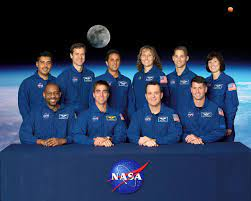

Corpo de astronautas da NASA

Os Corpo de Astronautas da NASA faz parte de uma unidade da NASA que seleciona, treina e provê astronautas como membros da equipe para missões espaciais americanas e internacionais. É baseado no Centro Espacial Lyndon B. Johnson em Houston, Texas.
O Corpo de Astronauta é baseado no Centro Espacial Lyndon B. Johnson em Houston, apesar de que os membros possam ser enviados à outros lugares baseados no requirimentos de suas missões, e.g. Soyuz treina na Cidade das Estrelas, Rússia.
O Chefe do Escritório dos Astronautas é a posição de liderança mais sênior para astronautas ativos no Corpo. O Astronauta Chefe serve como chefe do Corpo e é o conselheiro principal para o Administrador da NASA sobre treinamento e operações de astronautas. O primeiro Astronauta Chefe foi Deke Slayton, apontado em 1962. O Astronauta Chefe atual é Patrick Forrester.
Os salários para astronautas civis recentemente contratados são baseados na escala de pagamento do Cronograma Geral do governo federal para as grades GS-11 até G2-14. A grade dos astronautas é baseada em suas conquistas acadêmicas e experiências. Astronautas podem ser promovidos à grade GS-15. Em 2015, astronautas baseados no Johnson Space Center em Houston, Texas, ganhavam entre US$ 66 026 (GS-11 paço 1) e US$ 158 700 (GS-15 paço 9 e acima).
Astronautas militares são detalhados para o Centro Espacial Johnson e continuam em serviço ativo para pagamento, benefícios, férias e coisas militares parecidas.